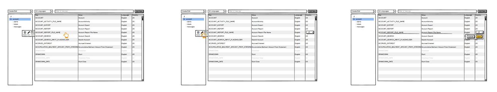

<!DOCTYPE html><html lang="en" id="top"><head><meta charset="UTF-8"/>
<meta name="viewport" content="width=device-width, initial-scale=1.0">
<meta http-equiv="X-UA-Compatible" content="IE=edge"/><title>Chris Norton: UX/UI Design</title><link href="https://fonts.googleapis.com/css2?family=Open+Sans:wght@300;600&amp;family=Roboto+Condensed:wght@400&amp;display=swap" rel="stylesheet"/><link rel="stylesheet" href="https://cdnjs.Cloudflare.com/ajax/libs/font-awesome/4.7.0/css/font-awesome.min.css"/><link rel="stylesheet" href="styles/styles.css"/><script src="js/polyfill.min.js"></script></head></html><body><div class="sticky-header"><div class="progress-indicator"></div><div><h1>Chris Norton: UX Designer III<a class="to-top" href="#top"><i class="fa fa-arrow-circle-up"></i> <span>Back to Top</span></a></h1><nav class="contact"><a class="email" href="mailto:public.cnorton@gmail.com" title="Send Email" target="_blank"><i class="fa fa-envelope"></i><span>public.cnorton@gmail.com</span></a></nav><nav class="pages"><a class="active" href="index.html" title="UX/UI Design">UX/UI Design</a><a href="ui.html" title="UI/Visual Design">UI/Visual Design</a></nav></div></div><div class="main-content"><div class="project"><div class="project-header-grid-hero"><div></div><div class="grid-double"><div><h3>My Road to UX</h3><p>My big introduction to UX came in 2004 working as creative director for Silver Beacon, a start-up digital signage company specializing in touch-screen applications. There was a big shift in thinking- websites at the time were primarily accessed while sitting at a desk while at home, work, or school, but our applications needed to perform out in the wild so designing for context became really important.</p><p>Making interactive maps and building directories usable meant designing for noisy environments and addressing accessibility for impairment, especially in critical spaces like hospitals and safety critical applications. Self-checkout systems like those used now in grocery stores, fast food joints, and the post office included considerations for analyzing physical goods, processing transactions, collecting contact information, and security. Some kiosks needed to move around and were part of attractions or traveling tours and needed to sync up with hosts and live performers. There was just a mountain of new factors where environmental and procedural context became critically important considerations needed to be included in the designed experience for the product to be successful.</p><p><strong>Discovery Communications, 2004</strong>: A few example states my team designed for the What Not To Wear Mall Tour and Animal Planet's Eukanuba Dog Show booth.</p></div><div></div></div><div></div></div><!--h3 Rapid Design Process--><!--ul.timeline-horizontal--><!--    li Persona Facts, Behaviors, Problems and Goals--><!--    li Task flow, affected components and systems--><!--    li UI: Desktop, Mobile, Watch, Voice, Internet of Things, etc--><!--    li REPEAT--><!--h3 Product Design Process--><!--ul.timeline-horizontal--><!--    li Define project goal and value it provides--><!--    li Analyze existing quantitative metrics to identify stakeholders most-related to project goal--><!--    li Analyze existing quantitative metrics to identify their most used features--><!--    li Contextual inquiry/ride-along to understand the value of those features to users over other solutions and discover workflow and environmental difficulties--><!--    li Map tasks and possible multi-modal touch-points--><!--    li Prioritize and group features based on unique value, user base, difficulty, and cost--><!--    li Define metrics to measure success and monitor dangers--><!----><!--    li Ideate solutions with representative team roles via team whiteboard--><!--    li Low-fidelity prototype for full task flow--><!--    li Map out information architecture/data flow for page elements--><!--    li Design Review--><!--    li Revise, iterate and review--><!--    li Interactive prototype, sometimes high-fidelity and based on design system--><!----><!--    li Usability testing--><!--    li Run A/B testing on previously defined quantitative metrics--><!--    li Create leading metrics to iterate faster during prolonged experiments (30/60/90 days)--><!--    li Compare to predictions and adjust expectations--><!--    li Iterate user flow based on results--></div><div class="project" id="aprimo-quickconnect"><h3 class="project-title aprimo">QuickConnect</h3><div class="project-header-grid-hero"><div class="section"><h4>Details</h4><Project></Project><div class="val-v">Social Media Platform</div><div class="key-value-pair"><div class="key-v">Client</div><div class="val-v">Aprimo</div></div><div class="key-value-pair"><div class="key-v">Platform</div><div class="val-v">Desktop, Tablet, Mobile</div></div><div class="key-value-pair"><div class="key-v">Launched</div><div class="val-v"><a href="https://chrome.google.com/webstore/detail/aprimo-quickconnect/lgifolfphnohppapdhljncfahjaedmea" target="_blank">Chrome Web Store - QuickConnect</a></div></div><h4>Team</h4><div class="key-value-pair"><div class="key-h">Project Strategist</div><div class="val-h">Tarun Chawla</div></div><div class="key-value-pair"><div class="key-h">Project Owner</div><div class="val-h">Jeff Wallace</div></div><div class="key-value-pair"><div class="key-h">UX/UI Design</div><div class="val-h">Chris Norton</div></div><div class="key-value-pair"><div class="key-h">Dev Teams</div><div class="val-h">USA/Netherlands/Belgium</div></div></div><p class="placeholder">Artifacts in progress contact for demo<!--img(src='images/boeing/insite/miro1.png')--></p><div class="section"><h3>Project Goal</h3><p>Aprimo was aiming to provide a more seamless access to DAM assets (Digital asset management system) as users built out articles and promotional materials on blogs and social media. The target  process required heavy cognitive load by forcing them away from the task to login, download the asset, switch back to the build task and upload. Additionally Aprimo hoped to utilize the CDN to be able customize the new output in various ways such as cropping and blurring without downloading anything.</p><h3>Project Results</h3><p>Chrome extension was successfully launched in the Chrome Web Store with positive reviews we were able to track an increase in users copying the CDN links to complete the flow. Internally the team found a lot of value in the process right away that we were able to carry on to other projects.</p></div></div><h3>What I Did</h3><div class="project-content-grid"><div class="section"><h4>Making valuable contributions right away with OOUX</h4><p>Early on I took over running the UX chapter remotely which communicated best practices and design decisions for all features moving forward in the product to the rest of the org to teams in USA, Belgium, Netherlands, UK, and Germany. Object-oriented UX was so valuable in familiarizing myself with important business objects so I could provide a consistent heartbeat of recommended patterns and best practices to the rest of the org. It’s an amazing workflow that gets everyone in alignment as fast as possible and gets people asking the right questions during the cheapest development cycles preventing a lot of rework down the line.</p></div><div class="section"><h4>New levels of fidelity and flexibility</h4><p>In my first feature project at Aprimo, OOUX allowed me to rally stakeholders, strategists, product owners and developers earlier in the process with new modern artifacts and levels of fidelity by identifying important business objects and defining the relationships between them. With consensus on how system objects were are actually talking to each other within the system we were able to uncover essential user CTAs and harden the most valuable use cases. Having solid CTAs allowed us to start mapping out system architecture by defining core attributes and filterable metadata needed either as part of UI or in the back-end.</p></div><div class="section"><h4>Flowcharts and wireframes</h4><p>Knowing which objects were in play and how they all talked to each other through their relationships and attributes made it a lot easier to map out initial flows.  Sometimes I will just start here and reach back for some of the previous tools on my own. It really depends on the project and how aligned everyone seems.  Sometimes the wireframe can start out as simple as the name of the object in play and can evolve towards including necessary components in the page.</p></div><div class="section"><h4>High-fidelity prototypes using Figma</h4><p>It really depends on the dev team and the current design system for how much fidelity is needed to move forward but for a first feature I opted to provide the most fidelity and scale back as we the team found our balance. I included several interactive Figma prototypes during this process showing how panels could expand and scroll. Using Figma allowed me to give specific design direction to the dev teams by leaning on the Material UI design system, internal UX pattern library and guidelines and my own customized components.</p></div></div></div><div class="project" id="aprimo-content-item-asset"><h3 class="project-title aprimo">Content Item Asset</h3><div class="project-header-grid-hero"><div class="section"><h4>Details</h4><Project></Project><div class="val-v">Core Business Object</div><div class="key-value-pair"><div class="key-v">Client</div><div class="val-v">Aprimo</div></div><div class="key-value-pair"><div class="key-v">Platform</div><div class="val-v">Desktop, Tablet, Mobile</div></div><div class="key-value-pair"><div class="key-v">Launched</div><div class="val-v"><a href="https://chrome.google.com/webstore/detail/aprimo-quickconnect/lgifolfphnohppapdhljncfahjaedmea" target="_blank">Chrome Web Store - QuickConnect</a></div></div><h4>Team</h4><div class="key-value-pair"><div class="key-h">UX/UI Design</div><div class="val-h">Chris Norton</div></div><div class="key-value-pair"><div class="key-h">Dev Teams</div><div class="val-h">USA/Netherlands/Belgium/UK/Germany</div></div></div><p class="placeholder">Artifacts in progress contact for demo<!--img(src='images/boeing/insite/miro1.png')--></p><div class="section"><h3>Project Goal</h3><p>More reusable, consistent component across multiple products in the ecosystem including look and feel and access to CTAs.</p><h3>Project Results</h3><p>Internally voted overly positive, reaction to new more recognizable anatomy recommendations in table view, card view and detail page view.  Strong guidelines and design methodology for future placement of actions ordering of CTAs and metadata.</p></div></div><h3>What I Did</h3><div class="project-content-grid"><div class="section"><h4>Research and Discovery</h4><p>To compare needs for content items across the system I worked with developers and system architects to track down instances across the product and used object maps to convert all the existing attributes into a format that could be easily compared between views.</p></div><div class="section"><h4>Finding Missing and Inconsistent Data</h4><p>With all the attributes mapped it was easy to discover missing attributes from more robust views.  For example, a video content item might show duration on the simple card view but be missing that same duration from the full detailed video detail page.  As a general rule more detailed views should absorb be absorbing attributes from their more simplistic views of the same object.</p></div><div class="section"><h4>Organization and Prioritization</h4><p>Using Pendo for analytics I could figure out quantitatively which data was used most often which helped in ranking priority and placement in the component anatomy. I also tapped back-end developers to get a sense of common character lengths for popular field values.</p><p>Having an object map allowed me insight on unique data that is useful in identifying instances of objects vs data that can be re-used for sorting and filtering.  Grouping attributes into categories also helped define priority for display.  Using this method really helps teams visualize why data and actions are placed where they are vs just something like looks nice in one scenario but need to be changed in another.</p></div><div class="section"><h4>Visualization</h4><p>Using the design system specs and the new anatomy guides I was able to create object containers that felt familiar across the full spectrum of available space from the smallest table row and list view representation to the most robust full detail page display.  Putting in this kind of work once really streamlines the design decisions for future work because there’s always one more action or one more icon that needs to be added and this kind of treatment gives a good roadmap for handling limitations.</p></div></div></div><div class="project" id="boeing-insite"><h3 class="project-title boeing">Social Media Platform</h3><div class="project-header-grid-hero"><div class="section"><h4>Details</h4><Project></Project><div class="val-v">Social Media Platform</div><div class="key-value-pair"><div class="key-v">Client</div><div class="val-v">Boeing</div></div><div class="key-value-pair"><div class="key-v">Platform</div><div class="val-v">Desktop, Tablet, Mobile</div></div><div class="key-value-pair"><div class="key-v">Launched</div><div class="val-v">Internal Boeing Network</div></div><h4>Team</h4><div class="key-value-pair"><div class="key-h">Project Lead</div><div class="val-h">Marc Rau</div></div><div class="key-value-pair"><div class="key-h">UX/UI Design</div><div class="val-h">Chris Norton, Ryan Anderson</div></div><div class="key-value-pair"><div class="key-h">Developers</div><div class="val-h">St. Louis Team</div></div></div><p></p><div><h3>What I Did</h3><p>I aligned the team to a singular vision by running UX workshops, design reviews, and iterating new features through low and high-fidelity interactive prototypes remotely via Miro digital whiteboards, Sketch, and InVision.  I also reduced team back and forth on feature priority by guiding creatives and developers towards measurable goals. I reduced time spent iterating prototypes by emboldening developers to help define user tasks flows allowing them to kick out impossible or overly complicated features earlier before hitting wireframing stages. I also helped set up the user testing workflow from ground zero including defining measurable goals, analyzing results, writing scripts, and administering remote tests via Skype.</p><h3>Project Overview</h3><p>Boeing needed to add mobile functionality and modernize the existing UI for a widely-used internal application that allows users to find team members, post news, ask questions, form groups, and organize team events.</p></div></div><div class="project-content-grid"><div class="section"><p></p><h3>Remote Collaboration Experts</h3><p>This team really taught me a lot about what an effective remote team can be like and the process was an active focus throughout the project. Even though we had team members in different states we were able to achieve better communication than a lot of the in-person teams I’ve worked on previously. We kept everyone on the same page through a mix of webcams, digital whiteboards, regular online meetings, and collective goal setting throughout an Agile process. We also used a combination of software including Adobe Suite, Sketch, InVison, Jira, and Miro.</p><p></p><h4>Digital whiteboards</h4><p>Having an interactive whiteboard gave us a huge speed boost. New features could be wireframed on the fly using post it-notes without spending time on any high-fidelity graphics. Features and flows could be vetted by developers quickly and easily. Design reviews could now do more with less effort. Cursor following tools allowed the team to see what other people were pointing to without having to switch who was sharing a screen. Screen sharing wasn't even necessary most of the time during these sessions.</p><p>Experimenting with the whiteboard as a ticketing system gave us a speed boost over Jira when it came to communicating design changes. Rather than creating a formatted ticket and attaching screenshots with descriptions scoping tasks we could now drive work with a quick post-it tacked directly to the design flow. The whiteboard system even allowed comments to be marked as resolved so it was easy to see what was still in progress. Designers could now jump into the flow and see flagged comments on the pieces that needed attention rather than reading through lengthy Jira tickets describing the design and having to open multiple tabs to see referenced screens.</p></div><div class="section"><h3>Consideration for Existing Users</h3><p>Building a user base is a lot of work and takes a lot of time to build up any sort of traction. This project already had a wide user base within the company and in some cases, was the only way for people to find employee information. We needed to get buy-in from users to avoid them dumping out when the new site launched. Ideally this relationship would have been started before any design but late is better than never.</p><h3>Do Site Refreshes Add Value?</h3><p>A valuable redesign should be able to answer, “What do we want this refresh to do?” If you can answer this question you know what is valuable to your user and to the business supporting the product. It gets a lot easier if you can tie a refresh to goals like faster onboarding, shared learning between teams, and overall shorter development cycles.</p><p>If you know the goals that add value you can move towards them. You can make decisions on whether unused features can be discarded or regrouped into new areas to create simplicity and clarity. You can design shorter routes for people which makes them want to use the new system, you don’t have to fight for it.</p><p>When I arrived a lot of the design effort was driven by converting all the old site functionality into a mobile experience and then reusing most of the mobile look and feel to update the desktop. It’s really hard to show value to existing users when you don’t add anything new because to them it just looks like you’re changing fonts and colors and shifting the navigation around. UX is a lot more effective at the beginning of a project because it doesn’t cause a lot of rework when you find out users don’t actually need the thing you spent time developing.</p></div><div class="section"><p></p></div><div class="section"><h3>Reclaiming Team Trust in the Design Process</h3><p>Shifting design decisions to be driven by user feedback on prototypes helped instill a sense of trust that the design process would work for this team. Watching users struggle let the team see where users would bail on the new design even though it was duplicating all the old functionality. Because we now had a sense of priorities we could iterate away from the original design and provide tools for the tasks users wanted to complete.</p><p>This sounds pretty basic after the fact, but when you’ve got a project going full steam ahead it takes a lot of effort and finesse to do course correction like this. Because this small piece now had success behind it, the team was more comfortable shifting away from just duplicating old functionality and instead moving towards gathering user information first to drive a design.</p><p></p></div></div></div><div class="project" id="boeing-new-business-generator"><h3 class="project-title boeing">New Business Generator</h3><div class="project-header-grid-hero"><div class="section"><h4>Details</h4><div class="key-value-pair"><div class="key-v">Project</div><div class="val-v">New Business Generator</div></div><div class="key-value-pair"><div class="key-v">Client</div><div class="val-v">Boeing</div></div><div class="key-value-pair"><div class="key-v">Platform</div><div class="val-v">Desktop, Tablet</div></div><div class="key-value-pair"><div class="key-v">Launched</div><div class="val-v">Internal Boeing Network</div></div><h4>Team</h4><div class="key-value-pair"><div class="key-h">Project Manager</div><div class="val-h">Shing-Hwa Cheung</div></div><div class="key-value-pair"><div class="key-h">UX/UI Design</div><div class="val-h">Chris Norton</div></div><div class="key-value-pair"><div class="key-h">Developer</div><div class="val-h">Chris Norton, India Team</div></div><h3>What I Did</h3><p>I brought focus to feature development by interviewing stakeholders and tying feature sets/user tasks back to journey maps and personas. Asking the right questions allowed me to eliminate the assumed mobile requirement and save 4 weeks of development time from a team of 5 developers.  Being in charge of both UX and UI required me to articulate design decisions, strategies, and progress to a range of stakeholders including business partners, project managers, and external development teams.  I also built the initial html/css/js to capture the more complex animations for the developers to use as a starter in production.</p><h3>Project Overview</h3><p>Boeing's "New Business Generator" tool consolidates multiple internal tools under one roof and allows sales reps to manage active client relationships representing billions of dollars in revenue.</p></div><div><p></p><p></p></div><div class="section"><h3>Save money through UX</h3><p>A lot of organizations sometimes have trouble justifying bringing UX into the budget.  UX is a little bit intangible at the start and it's hard to quantify exactly how it will help adding another person to the team.  The thing is though, when a project has several hypothetical developers billing at $150+/hr, 8 hours a day, 5 days a week, it adds up fast.  Even just 5 developers would be $6,000 a day, and $30,000/week.</p><p>If you can find problems before any of those folks get involved you start saving a lot of money really fast. Throughout the course of this project I probably saved the dev team about 4 or 5 weeks worth of  work based on their initial screenshots of how the project flowed previously.</p><h4>Key findings</h4><ol><li><div><p>Initially this project was slated to be launched on desktop, tablet and mobile phones.  Talking with actual users revealed that the complexity of the charts and data comparisons made it extremely difficult to see all necessary components at once on a mobile phone and that users would find this experience mostly unhelpful.</p><p><strong>Solution</strong><br>The mobile phone requirement was removed.</p></div></li><li><div><p>The previous implementations had a lot of restrictions on how they could access and display data through the existing architecture.  Even though the new version allowed data to be grouped and displayed more freely it was hard for the team to imagine the product working beyond what it did previously.</p><p><strong>Solution</strong><br>Mapping out some basic user task flow allowed me to see where we were making users backtrack further than necessary.  Condensing steps and eliminating duplicate routes allowed users to jump from one task to another faster and eliminated dev requirements.</p></div></li></ol></div></div></div><div class="project" id="boeing-historical-services"><h3 class="project-title boeing">Historical Services</h3><div class="project-header-grid-hero"><div class="section"><div class="flex-row"><div><h4>Details</h4><div class="key-value-pair"><div class="key-v">Project</div><div class="val-v">Historical Services</div></div><div class="key-value-pair"><div class="key-v">Client</div><div class="val-v">Boeing</div></div><div class="key-value-pair"><div class="key-v">Platform</div><div class="val-v">Desktop, Tablet, Mobile</div></div><div class="key-value-pair"><div class="key-v">Launched</div><div class="val-v">Internal Boeing Network</div></div></div><div><h4>Team</h4><div class="key-value-pair"><div class="key-h">Project Manager</div><div class="val-h">Adelle Squires</div></div><div class="key-value-pair"><div class="key-h">Strategist/Creative Director</div><div class="val-h">Darryl Barrabee</div></div><div class="key-value-pair"><div class="key-h">UX/UI Design</div><div class="val-h">Chris Norton</div></div><div class="key-value-pair"><div class="key-h">Developer</div><div class="val-h">Teresa Jellison</div></div></div></div></div><div><p></p><p></p></div><div><div class="section"><h3>What I Did</h3><p>I brought focus to feature development by tying requested features in the brief back to journey maps and user tasks which revealed the potential for more modern design patterns to solve the real user problem.</p><h3>Project Overview</h3><p>Boeing was looking to reduce the number of customer service calls and emails related by providing users with more information about the process of preserving historically significant Boeing artifacts like blueprints, prototypes, etc.</p></div><div class="section"><h3>Refining and Iterating Project Goals</h3><p>To fulfill the original creative brief I was brought onto the team to handle the UX/UI on a few text-heavy pages provided by the client: Terms and Conditions page and Team Members.</p><h4>Terms and Conditions Page</h4><p>It took me a while to figure out what the Terms and Conditions page was trying to say during my first read-through which was a good indicator that the page needed a rewrite.  As it turned out, this page was less of a legal terms and conditions page and more of a reference manual that users could use if they got stuck on the form.</p><h4>Team Members Page</h4><p>The goal of the Team Members page was to find the best format to display various pieces of data like name, job role, department specialty, bio, etc.  Included with the brief were three suggested template variations that ranged from displaying data as key/value pairs to a more prose-like format.  UX was needed to find the best option. Ah, but the best option to… do what? Provide relevant information for someone writing an article? Showcase the efforts and expertise behind the scenes?</p><p>Regrouping with the client and talking through the benefits of each format helped reveal that the real problem was that users were confused about who they should choose to submit the form to. So the most important information was each team member’s area of expertise.</p></div><div class="section"><h3>Solving the Real Problem</h3><p>So once I had a better understanding of what the additional pages were supposed to accomplish I could work on providing an experience that required less legwork for the user and less cognitive load.  Ideally, this would increase submissions via the form versus having to contact a team member for assistance each time.</p><h4>Previous User Route with Creative Brief Additions</h4><ol><li>User navigates from the home page to the submission form</li><li>User is asked which team member should receive their submission</li><li>User navigates to Team Page to look up the team member that specializes in the category of the item being submitted.</li><li>User navigates to the submission form and fills in a team member</li><li>User continues with the submission form and gets stuck on a question</li><li>User navigates to Terms and Conditions page</li><li>User searches or scrolls down to the relevant help section for more information</li><li>User navigates to the submission form</li><li>Progress is lost on the form so user opens a new tab to flip between the reference material and the form, repeating steps 4-8 until all the questions are complete</li><li>User submits form</li><li>Success!  Just kidding, the user dumps out and calls the direct line for help back at Step 2</li></ol></div><div class="section"><h3>Solutions</h3><p>In both solves, the team page was removed in favor of letting the system determine where the form needed to go. This way the user could focus on their item being submitted and not have to worry so much about the process.</p><div class="flex-row"><div><h4>User Route 1</h4><ol><li>User navigates from home page to the submission form</li><li>User is walked through a form wizard that provides help text and example answers inline. A categorizing question is included so the system can route the form to the correct person behind the scenes</li><li>Success! User submits form</li></ol></div><div><h4>User Route 2</h4><ol><li>User navigates from home page to a category gallery</li><li>User navigates to the submission form from a category-specific call to action that invites the user to submit a similar item</li><li>User is walked through a form wizard that provides help text and example answers inline. The normal categorizing question is skipped because the system already knows the category based on the call to action</li><li>Success! User submits form</li></ol></div></div><h4>User Benefits</h4><p>Including galleries helped make more of the work more easily accessible and gave users a better reference for what types of items would be accepted into the archives. Previously the homepage contained a very general overview of what the division did and instructions on where to find the form.  Archives were seen in-person only.  Providing categorized galleries also helped to shortcut the categorization issue that users were struggling to understand by allowing them to submit similar items to the ones already on screen.</p></div></div></div></div><div class="project" id="service-admin-portal"><h3 class="project-title john-deere">Service Admin Portal</h3><div class="project-header-grid-hero"><div class="section"><h4>Details</h4><div class="key-value-pair"><div class="key-v">Project</div><div class="val-v">Service Admin Portal</div></div><div class="key-value-pair"><div class="key-v">Client</div><div class="val-v">John Deere</div></div><div class="key-value-pair"><div class="key-v">Platform</div><div class="val-v">Desktop, Tablet</div></div><div class="key-value-pair"><div class="key-v">Launched</div><div class="val-v">Internal JD Network</div></div><h4>Team</h4><div class="key-value-pair"><div class="key-h">Project Manager</div><div class="val-h">Nancy Early</div></div><div class="key-value-pair"><div class="key-h">UX/UI Design</div><div class="val-h">Chris Norton</div></div></div><p></p><div class="section"><h3>What I Did</h3><p>I mapped information architecture and iterated through complicated user task flows for a global single-page app managing billions of dollars in revenue and purchased customer services. Utilized techniques like empathy mapping, user personas, story mapping, card sorting, chalk mark testing, and reverse card sorting. I uncovered hidden gotchas not listed in requirements documents by walking business partners, project managers, and developers through user flows.  I used a variety of communication styles from running in-person ideation workshops to create low-fidelity wireframes as well as sending over Balsamiq prototypes for approval.  Balsamiq being low to medium fidelity allowed us to leverage the effort put into the design system.</p><h3>Project Overview</h3><p>John Deere was looking to reduce the cost of equipment maintenance by bringing duplicate silo apps under a singular technology solution and dev team.  The hope being that a unified application would allow for a more consistent experience and better visibility between departments and throughout the full workflow.</p></div></div><div class="project-content-grid"><div class="section"><h3>Kick-off</h3><p>The team initially decided to minimize usability and adoption issues by basing large portions of the creation and editing workflow around existing websites already in use by various teams. Where possible the flow for editing and creating assets would remain similar.  Much of the new flow came from connecting assets that were previously isolated and could now talk to each other.   Budget was also a consideration so starting from scratch was going to be out of scope.</p><p></p></div><div class="section"><h3>Defining Users</h3><p>Using the project requirements document, email interviews, and phone calls and user tasks we built out personas which allowed us to prioritize and find each user’s most needed tasks.</p><h4>Business Owners and Dealers</h4><p>Needed to be able to monitor overall profitability and admin</p><h4>Sales Representatives</h4><p>Needed the ability to quickly pull from existing template agreements, view existing agreements and work within bundled groups of agreements for customers.</p><h4>Technicians</h4><p>Needed to be able to update the status of their job tickets on customer machines as services were performed.  They also needed to be alerted to upcoming and past due tasks to be able to predict upcoming needs for staff workloads and ordering inventory.</p></div><div class="section"><h3>User Testing and Findings</h3><p>In-person workshop sessions were used to ensure user tasks were available and intuitive for each user type.  In some cases, we found that users were using multiple tabs as a gap fix to not having the context of the data in front of them for either global or minute actions even in the existing apps.  These areas offered us the chance to make the experience better by showcasing the missing data alongside the task.</p><p></p></div><div class="section"><h4>Findings</h4><p>One of the biggest challenges was introducing UX into an already established Agile-like development process. While we tried to map out major connections between sections ahead of development we ran into cases where the workflow dead-ended with the actual backend data available. Some additional concept proofs for specific sections may have been helpful in preventing some of the data availability mismatches as well as budgeting more time for iteration as the team adjusted to including UX into their process would have given more wiggle room.  Overall, allowing the users to have feedback early and often did make adoption smoother and users were less surprised with the final product.</p></div><div class="section"><h4>Card Sorting for Better Navigation</h4><p>To pin down navigation, users were asked to place task cards into groups that made the most sense to them.  Consideration was also given to how frequently the user would need to access the task.</p><h4>Tree/Chalk-mark for Menus and Options</h4><p>Users were presented with menu structures and asked where they would click to find areas of the site or next steps in the work-flow.</p></div><div class="section"><h4>Whiteboard/Wireframe Prototypes</h4><p>In some cases, multiple levels of user access complicated the approval structure of assets to the point where workflows had to be completely redefined. Low-fidelity prototype drawings allowed us to check in with users frequently and make sure the task could still be completed before being moved into high-fidelity interactive prototypes.</p><p></p></div><div class="section"><h4>Consolidating multiple UI Specifications</h4><p>To build interactive, high-fidelity mockups we were able to pull from a living style guide being developed in parallel by a different team for many components.  When components were missing completely we took cues on fonts, colors, spacing and icons from what was already being developed and matched them as close as possible.  Part of my role included policing the style guide and returning it to developers if the final product mismatched these brand standards.</p><p></p></div></div></div><div class="project" id="translations"><h3 class="project-title john-deere">Translations</h3><div class="project-header-grid-hero"><div class="section"><h4>Details</h4><div class="key-value-pair"><div class="key-v">Project</div><div class="val-v">Translations</div></div><div class="key-value-pair"><div class="key-v">Client</div><div class="val-v">John Deere</div></div><div class="key-value-pair"><div class="key-v">Platform</div><div class="val-v">Desktop</div></div><h4>Team</h4><div class="key-value-pair"><div class="key-h">Sr UX Design</div><div class="val-h">Chris Norton</div></div><div class="key-value-pair"><div class="key-h">UX Design</div><div class="val-h">Mark Hein</div></div></div><div><p></p><p></p></div><div class="section"><h3>What I Did</h3><p>I mapped information architecture and helped prioritize product features by conducting stakeholder interviews using red routes. I translated user tasks into low-fidelity prototypes and set up a user testing flow. I set up metrics that allowed the team to track understanding between releases and also between different groups of users.</p><h3>Project Overview</h3><p>John Deere was hoping to streamline the process of gathering and implementing translations between person translators and developers for its suite of internal enterprise applications.</p></div></div><div class="project-content-grid"><div class="section"><h3>Task Prioritization</h3><p>This exercise reduced a lot of the back and forth over which features were more important to the most users.  Because all users were equally important this worked well.</p><p></p></div><div class="section"><h3>Low-Fidelity Prototypes</h3><p>John Deere already has a design system in place with live components so creating pixel-perfect user flows wasn't necessary early on.</p><p></p></div><div class="section"><h3>High-Fidelity Prototypes</h3><p>I used Figma to define the UI for components that were completely new.  One benefit I really like for Figma over Sketch is that design styles can be shared directly with developers vs having to first export to InVision.</p><p></p></div><div class="section"><h3>Usability Metrics and Research</h3><p>By assigning tasks a usability score I set up metrics in a way that would allow the team to see how well different groups of users were able understand features.  Also being able to track rounds on features gave the team a bit of an early warning system. Excessive rounds of design in only certain areas could suggest a lack of understanding towards a type of user and a need to ask more questions about that feature.</p></div></div></div><div class="project" id="aquent-it-solutions-recruiting-website"><h3 class="project-title aquent">Employee Recruiting</h3><div class="project-header-grid-hero"><div class="section"><h4>Details</h4><div class="key-value-pair"><div class="key-v">Project</div><div class="val-v">Recruiting Website</div></div><div class="key-value-pair"><div class="key-v">Client</div><div class="val-v">Aquent IT Solutions</div></div><div class="key-value-pair"><div class="key-v">Platform</div><div class="val-v">Desktop, Tablet, Mobile</div></div><div class="key-value-pair"><div class="key-v">Launched</div><div class="val-v"><a href="https://aquent-it-solutions.com/" target="_blank">aquent-it-solutions.com</a></div></div><h4>Team</h4><div class="key-value-pair"><div class="key-h">Project Manager</div><div class="val-h">Matt Kruse</div></div><div class="key-value-pair"><div class="key-h">UX/UI Design</div><div class="val-h">Chris Norton</div></div><div class="key-value-pair"><div class="key-h">UX Research/Testing</div><div class="val-h">Chris Norton<br>Pooja Arshanapally<br>Mark Hein</div></div><div class="key-value-pair"><div class="key-h">Front-end Developer</div><div class="val-h">Chris Norton</div></div></div><div><p></p><p></p></div><div class="section"><div class="video-container"><video id="aquent-home" width="223" height="470" poster="video/aquent/aquent-home.jpg">
<source src="video/aquent/aquent-home.mp4" type="video/mp4">
</video></div><h3>What I Did</h3><p>I led the UX/UI/Front-end development efforts for the project which included a deep dive into the core business model and journey map of hiring on a new employee. By understanding the surrounding steps we were able to define better what role the website was actually playing in the overall process.</p><h3>Project Overview</h3><p>Aquent IT Solutions was looking attract more recruits by updating the current website with a more modern look</p></div></div><div class="project-content-grid"><div class="section"><h3>Refining and Iterating Project Goals</h3><p>This project is a great example of how UX can help unify a wide variety of opinions under a single banner. When I was brought into the team the website was operating under the premise that, "of course we need a website because a business needs a website to look like a real business." Businesses build websites like this all the time just to get something out there, but run into trouble when it comes time to update and prioritize content. Everyone always has a different idea of what they think users want or need. The solution is pretty easy though - just ask the users.</p><p>Of course asking users seems obvious now, but companies wrestle with sites like these for years until someone comes in and actually identifies the problem. A lot of the time the problem is that they really just don’t have a clear idea of what their users are trying to get from the site. Page tracking was in place so they knew some pages were more popular than others, but with who? And did those pages lead to conversions?</p><p>A lot of conversations at the start revolved around what graphics looked old or what the best font sizes were. No real conversations about users being able to find necessary information or even who the users were. Was the purpose to attract new business, or was it to attract new recruits?  It wasn’t going to get us very far talking about what color a door should be if we didn’t first talk about if that door needed to be attached to a car or a house.</p><p>Prioritizing site goals and identifying users made it a lot easier to direct the team away from cosmetic changes and get them to focus on usability gaps by asking measurable questions like "Are we getting less job candidates calling in about H1B visas since adding the new section with visa information?" Less people calling in about visas? Yes? Okay success then. Next feature!</p></div><div class="section"><h3>Defining Users to Create Better Project Deliverables</h3><h4>User 1: New business</h4><p>Previously the website was hoping to appeal to both new business and employee candidates. Looking into past projects, we uncovered that very few business leads mentioned the website as a deciding factor. Most new business was attained through existing partner relationships with almost zero contact coming in from the site. It just wasn’t factor.</p><h4>User 2: Employee Recruits</h4><p>Aquent generates a significant portion of revenue by finding developers and placing them on site with client teams. By talking with recruiters we found that all of these job candidates touched the website at some point and it did have a significant impact on their decision to pursue an interview. So our biggest impact would be in catering to job candidates with the goal of getting more of them to reach out via the site to begin the interview process.</p><p></p></div><div class="section"><h3>User Testing and Gathering Users</h3><p>We were able to get a fresh supply of user testing by adding new hires as site testers. Through a mix of ongoing surveys and live-recorded usability sessions we were able to uncover what conversations users were hoping to have with the site and where that communication broke down. Also by asking job candidates about the website we got more insight into user frustrations throughout the recruitment process that ran a lot deeper than just making a website look more modern.</p><h3>Test Findings</h3><h4>Menus</h4><p>During testing we found that our menus were unclear. Some menu items were trying to be too cute. Straightforward, boring menus worked better.</p><h4>Users hate filling out job forms</h4><p>Users also hated contact forms and filling out job history. Except for one user, the vast majority preferred the option of just sending an email with a resume versus filling out a lengthy form with job history. We took out the contact form and replaced it with an email where they could send it in to a real person. After each testing session we made the smallest effective change to fix the problem and then retested. Over and over until we stopped having the problem.</p></div><div class="section"><h4>Other big problems</h4><ol><li>Candidates  didn't feel informed about the overall process or were left wondering about next steps causing them to leave the process.</li><li>Users had a hard time understanding what the company actually did.</li><li>Candidates didn't know whether they were talking to Aquent the parent company or Aquent IT Solutions the technology division which caused users to bail.</li><li>Each social media channel looked like it was run by a different team.</li></ol><p></p></div><div class="section"><h3>Solving the biggest problem of all: TIME</h3><p>In some cases we found the hiring process was taking upwards of two months!  That was way too long between contacting a candidate and placing them on site with a client. This was easily our biggest hurdle in being able to place new candidates quickly and competitively.</p><p>Overlaying our decades-old process flow on top of our newly-created journey map allowed me to uncover our own roadblocks. We had too many interviews and they were spaced too far apart. Also approvals during the process, originally meant to save people time were causing scheduling conflicts and pushing back timelines.</p></div><div class="section"><h4>PREVIOUS INTERVIEW PROCESS (2 WEEKS BETWEEN STEPS!)</h4><ol><li><p><strong> WEEK 1-2</strong><br>Recruiter reaches out for a short phone conversation to gauge interest and talk about opportunities</p></li><li><p><strong> WEEK 3-4</strong><br>HR - Screens for temperament and general fit into the project team environment, pre-screens for technical interviewer so a part one tech interview. In at least one case a user ended the process at the confusion of being given a tech interview by a non-tech person.</p></li><li><p><strong> WEEK 5-6</strong><br>Technical - Screens for advanced technical knowledge, tech interview part 2</p></li><li><p><strong>WEEK 7-8</strong><br>Hiring company/Client - Screens for their own individual team so tech interview part 3</p></li></ol></div><div class="section"><h4>REVISED PROCESS (2 Months down to 7 days or less)</h4><ol><li><p><strong>DAY 1 - Gauge interest conversation and screen for behavior</strong><br>Recruiter finds a potential candidate and reaches out for a short conversation to gauge interest in setting up an interview. The recruiter pre-screens for behavioral and to answer HR related questions instead of setting up a whole other interview before a tech interview.</p></li><li><p><strong>Day 2 - Tech interview via Skype or in Person</strong><br>For candidates that have reached out, resumes have been screened already by a senior developer. This was one of the biggest blockers. Having the tech take five minutes to pre-screen a resume after a candidate expressed interest far outweighed the 1-3 weeks lost in waiting for someone with senior experience to free up time to pre-screen after that first interview had taken place.  Also it worked towards solving the problem of experienced candidates being technically interview by inexperienced staff.</p></li><li><p><strong>Day 3</strong><br>Candidate interviews with the client team to find out where they will potentially be placed. Unfortunately this still means a multi-day interview process but it does take the number of days the candidate down to two surgical time slots versus 4 days spaced out over months.</p></li></ol></div><div class="section"><h3>Content strategy</h3><p>Having users not understand what the company did was a big deal. Asking around, even internal employees struggled with any sort of elevator pitch. It made sense, the main source of marketing for decades had been the website and the website changed direction every few years. So really the content strategy needed to include internal effort as well to help our own people understand what they were working together to achieve. I created guidelines for content and tone for social media, internal communication and external marketing.</p><h4>Social media</h4><p>We found candidates really only found us through a select few social media sites. As a conservation of effort we brought the branding in line with those particular sites and closed the remainder. We also committed to a content strategy to prevent these areas from looking abandoned in the future.</p></div></div></div><div class="project" id="paprika"><div class="section"><h3 class="project-title paprika">Mobile App with Conversational AI</h3><div class="project-header-grid-hero"><div class="section"><h4>Details</h4><div class="key-value-pair"><div class="key-v">Project</div><div class="val-v">Paprika Mobile App</div></div><div class="key-value-pair"><div class="key-v">Client</div><div class="val-v">(Design Study)</div></div><h4>Team</h4><div class="key-value-pair"><div class="key-h">UX / VUI Design</div><div class="val-h">Chris Norton</div></div></div><p></p><div class="section"><h3>What I Did</h3><p>I helped run a new technology design study to incorporate UX/VUI and learn how to build multi-modal products using conversational AI.  I researched utterances vs intents with friends and coworkers and created conversational maps vs journey maps. I used Figma to visualize user scripts and task flows that paired with developer efforts building prototypes using Amazon’s Alexa.</p><h3>Project Overview</h3><p>The Aquent team was hoping to define a workflow and proof of concept for adding voice capability to new and existing applications to create more touchpoints for users.  The app would help users to collect recipes, plan meals and shop for ingredients and includes touchpoints at home, on the go, and at the point of purchase.</p></div></div><div class="project-content-grid"><div class="section"><h3>Using Voice to Create More Touchpoints</h3><p>VUI’s or Voice User Interfaces create unique opportunities to interact with products without having to physically touch them or even see them.  Tasks that require both hands or require the user to maintain eye contact are great candidates for a VUI.</p><h3>Accessibility and Safety with Covid-19</h3><p>Especially with Covid-19, many companies are looking at reducing touch and controlling their applications via voice.  A lot of essential tasks such as banking, appointment scheduling, and grocery shopping have moved online. Making sure products are accessible to everyone, besides being the right thing to do is more important than ever as  companies are increasingly finding themselves in hot water when essential services don’t include considerations for users with disabilities such as those with reduced motor skills, memory and the visually impaired.</p><h3>Why Conversational AI?</h3><p>Conversational AI operates as a layer to AI that translates user speech(utterances) into intents and commands. With a conversational approach, you lean on the AI to figure out what the user is trying to do versus training users to talk like computers. This makes apps more intuitive and accessible. There is less learning and more just doing.</p></div><div class="section"><h3>Traditional vs Conversational Examples</h3><h4>Traditional Speech Recognition of Commands</h4><p>Let’s say the user wants to find a recipe to make.  With traditional speech recognition that might look something like, “List recipes,” or, “Search chicken.”  The user is forced to know what tasks are available already.</p><p></p><h4>Example of Conversational AI</h4><p>With conversational AI the user can say something more like, “What can I make?” and the digital brain can figure out that the user is looking for a recipe (because it’s a recipe app) and can follow up with something like, “I found three recipes in vegetarian(category) and two side dishes(category) that can be made with items in your pantry. *beat* Would you like me to list those results? You can say stop listing at any time.”</p></div><p></p><div class="section"><h3>Step 1: User Research and Validation</h3><h4>User Interviews</h4><p>To figure out if the voice would actually be able to solve the problem and reach more touchpoints with users we did a limited number of participants gauge user interest.</p><h4>Conversational Map/Journey Map</h4><p>To get a general sense of how the voice would affect various sections of the app we did a mix of role-play and  onsite guerilla-style interviews, or we just went home and logged potential interactions while actually trying to cook something.  Asking  people how they would ask the app to complete a task was helpful in drawing out some of the initial keywords towards commands and intents.</p><p></p></div><div class="section"><h4>Environment</h4><p>Looking back, using the environment as a constraint might have saved time in figuring out which sections were most useful.  It was really useful to have a starter library of keywords and actually language used though. User research indicated that users interacted with the app both inside and outside the home, but users were more motivated to use voice by themselves vs around others.  For example, both taking the bus and driving along both categorized the user as, “on the go,” but users were less self-conscious when they were driving alone.</p><p>Users also found more value in voice interactions during tasks that already required both hands or when their hands were dirty.  Having their hands coated in flour or other messy ingredients also made a strong case for voice interaction.</p></div><div class="section"><h4>Environment-Driven Tasks</h4><p>Looking at tasks that users would likely want to complete while driving or while cooking both seemed like good starting candidates.  A few example tasks:</p><ul><li>Users who have scheduled recipes into a meal planner might want to verify that all ingredients have been added to their shopping list while on the way to the store.</li><li>Users might want to know the next or previous steps in a recipe as they work along.</li><li>Users might want to check off ingredients as they use them during food preparation.</li></ul></div><div class="section"><h4>Debunked Assumptions</h4><p>Interviewing users revealed confusion for doing anything cooking-related  tasks while driving. While some participants reported it useful to add eggs or snacks on the fly, people struggled with tying the need to work with shopping lists for recipes that had been scheduled on a calendar. We might not have worded the question very well either, but even after some explanation, it ranked as low-priority compared to other features.</p></div><div class="section"><h4>The Real MVP</h4><p>Users did however find it intuitive to have voice assistance during food preparation. It was very valuable to find recipes and walk through instructions after the user had started to work with ingredients.  This allowed users to keep working vs having to wash their hands after various steps in order to use the app.</p></div><div class="section"><h3>Step 2: VUI (Voice User Interface) Design</h3><p></p></div><div class="section"><h4>Testing Dialog Prototypes</h4><p>Once we knew which sections and tasks were higher priority we could start iterating through various dialog prototypes of task flows.  A lot of these can just be back and forth conversations in various forms before you start any actual coding.</p><h4>Notecards/Post-its</h4><p>Two people sitting at a table with the existing app visible to both The “user” spoke phrases out loud and the “prototype” would sift through notecards and read the pre-written responses. This was an okay low-fidelity starter but the back and forth was a little awkward as the person playing the role of prototype searched through their pile of responses.  Also if there was no response it dead-ended the entire task flow causing another session to be scheduled for that flow.</p></div><div class="section"><h4>Wizard of Oz</h4><p>It was actually a lot faster to have the two people in different rooms just call each other and have the user side try to initiate tasks via voice while the person playing prototype puppeted the responses.  This way everything didn’t come to a halt if unknowns showed up.  The prototype could adlib suggested actions or route through to error states.</p><h4>Situational Recording</h4><p>Recording someone actually doing a task and interacting with the prototype was useful for gathering intents and language for indirect commands.  For example having someone say, “Hold on, I’m out of bowls!” wasn’t something the user was actively thinking about achieving, but the intent was still there to stop reading the current step until they washed one of the dirty bowls.</p></div><div class="section"><h3>Engaging Development and AI</h3><h4>Voice-activated Prototypes</h4><p>Once you start to have a running list of user utterances/triggers, intents, and commands you can start to link the prototype up to the technology side to make the call and response process flow even smoother.  Adobe XD has voice recognition but it only lets you link up one user utterance to trigger a response.  It might just be easier to link up a prototype to something like an Alexa skill depending on where the dev team is at and what library they’re using. Building a digital prototype in this way also makes the switch from responses with baked-in data into real function calls a little more seamless.</p><h4>Engaging with AI</h4><p>You get a lot more out of the AI if you have a library of keywords and phrases built from the previous steps.  With a functional or semi-functional app in place,  you can leverage the AI to refine the keyword pairings that trigger commands and route the user into dialogs/flow for the tasks they are really asking for.</p></div></div></div></div></div></body><script src="js/app.js"></script>